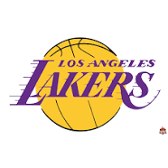
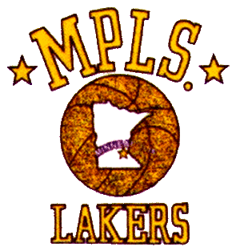

Histoire des Lakers:
Les Lakers de Los Angeles (en anglais : Los Angeles Lakers, « les habitants des lacs de Los Angeles ») sont une franchise de basket-ball évoluant en NBA basée à Los Angeles en Californie. Les Lakers jouent leurs matchs à domicile à la Crypto.com Arena, une salle partagée avec les Sparks de Los Angeles de la WNBA et les Kings de Los Angeles de la Ligue nationale de hockey. Les Lakers sont l’une des équipes les plus titrées de l’histoire de la NBA, ayant remporté 17 titres, un de moins que les Celtics de Boston, possédant le plus de titres de la ligue. La franchise a débuté avec l’achat en 1947 d’une équipe dissoute, les Gems de Détroit de la National Basketball League (NBL). La nouvelle équipe a commencé à jouer à Minneapolis, sous le nom des Lakers de Minneapolis. Initialement membre de la NBL, les Lakers ont remporté le titre NBL en 1948 avant de rejoindre la rivale Basketball Association of America (BAA), où ils remportèrent cinq des six finales suivantes, menés par la star George Mikan. Après avoir éprouvé des difficultés financières à la fin des années 1950, après la retraite de George Mikan, ils ont déménagé à Los Angeles en 1960. Dirigée par les Hall of Famers Elgin Baylor et Jerry West, la franchise a participé aux finales NBA à six reprises dans les années 1960, mais a perdu chaque série au profit des Celtics, marquant le début de leur longue et riche rivalité. En 1968, les Lakers acquièrent le quadruple Most Valuable Player (MVP), Wilt Chamberlain, et remportèrent leur sixième titre de la NBA, le premier à Los Angeles, en 1972. Après la retraite de West et Chamberlain, l’équipe a acquis Kareem Abdul-Jabbar, qui a également remporté plusieurs titres de MVP, mais n’a pas été en mesure de participer aux finales NBA à la fin des années 1970. Les Lakers des années 1980 ont été surnommés "Showtime" en raison de leur attaque rapide menée par Magic Johnson. L’équipe a remporté cinq titres NBA en neuf ans et était dirigée par le célèbre entraîneur Pat Riley. Après la retraite d’Abdul-Jabbar et de Johnson, l’équipe a connu des difficultés au début des années 1990, avant d’acquérir Shaquille O'Neal et Kobe Bryant en 1996. Avec le duo, qui était dirigé par un autre célèbre entraîneur, Phil Jackson, l’équipe a remporté trois titres consécutifs entre 2000 et 2002, offrant à la franchise son deuxième "three-peat". Menés par Bryant, les Lakers ont remporté deux autres titres NBA en 2009 et en 2010. Après l'arrivée de Lebron James, ils remportent également un titre en 2020. Les Lakers détiennent le record de la plus longue série de victoires de la NBA avec 33 matchs consécutifs, établis au cours de la saison 1971-1972. En 2012, c'est la franchise la plus riche de la NBA avec une valeur financière de plus de 900 millions de dollars selon le magazine Forbes, mais en 2014 elle cède cette place de franchise NBA la plus riche au profit des Knicks de New York qui la devance de 100 millions de dollars (1,4 milliard contre 1,3 pour les Lakers). En outre, le club est l'une des quatre franchises NBA basées en Californie, avec les Clippers de Los Angeles, les Kings de Sacramento et les Warriors de Golden State.

